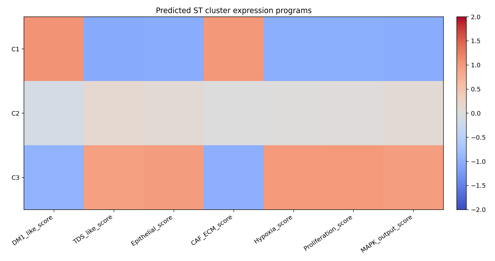
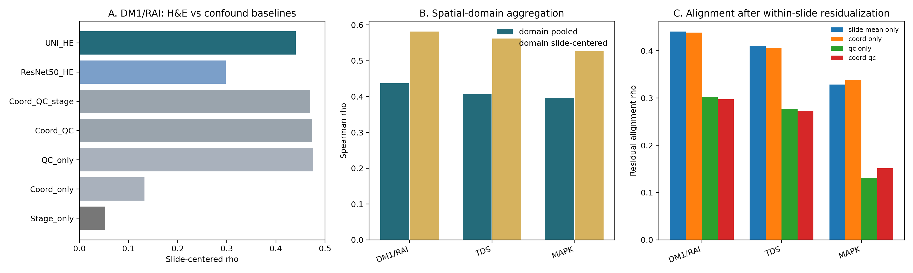
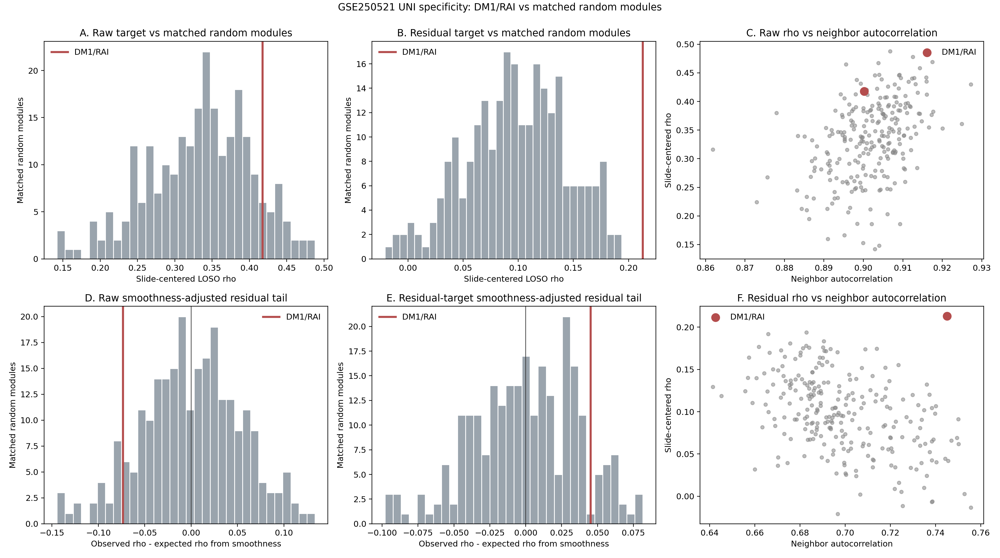
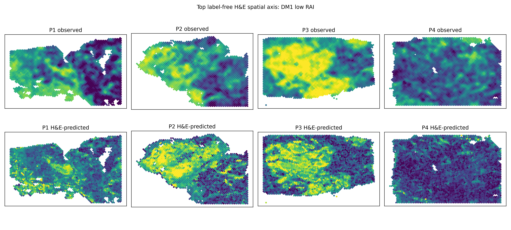
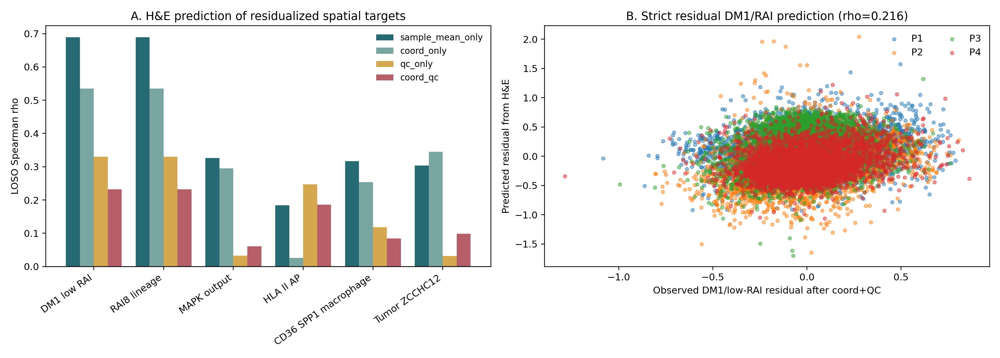
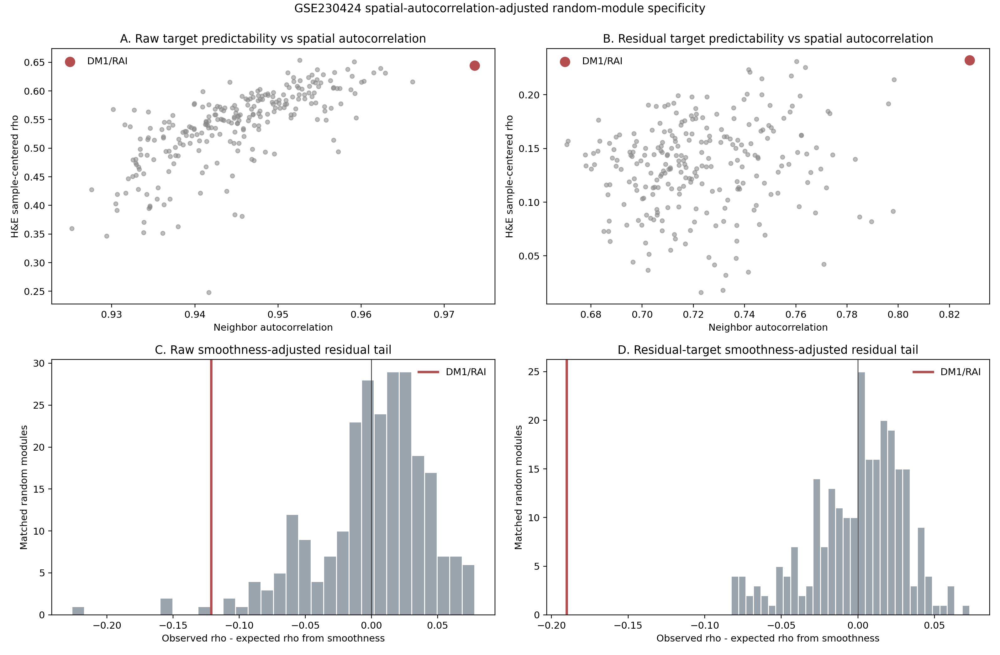
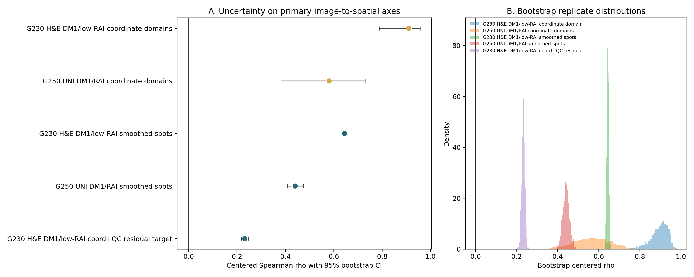
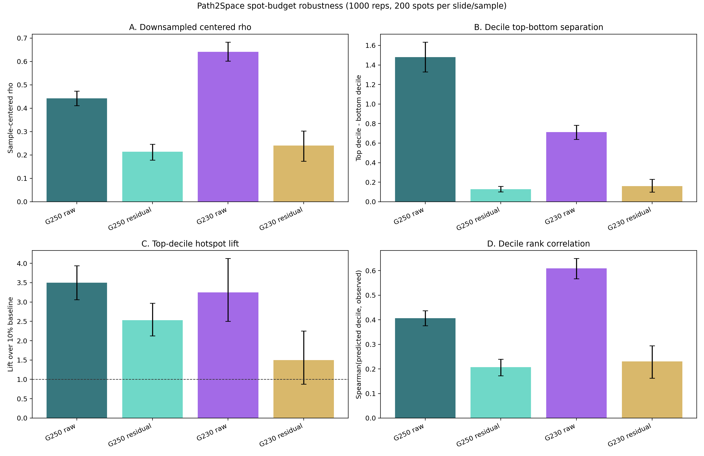

01TL;DR
What Changed
The earlier scout evaluated raw spot RNA labels. The reanalysis follows the Path2Space paper's practical lesson: smooth local spatial labels before evaluating H&E-to-expression prediction.
What Did Not Change
The direct GSE250521 MAPK x Panel spatial anti-correlation remains closed from v15-v18. This page is Paper 2 support, not Paper 1 causal mechanism support.
| Metric | Value | Source |
|---|---|---|
| Top smoothed target | DM1_like_score | PATH2SPACE_REANALYSIS_SUMMARY.json |
| DM1/RAI raw LOSO Spearman rho | 0.295 | path2space_loso_target_summary.tsv |
| DM1/RAI KNN-8 smoothed LOSO Spearman rho | 0.392 | path2space_loso_target_summary.tsv |
| Slides with DM1/RAI rho > 0.2 | 12/16 | path2space_loso_target_summary.tsv |
| MAPK output smoothed LOSO Spearman rho | 0.298 | path2space_loso_target_summary.tsv |
| Best spatial cluster k / silhouette | 3 / 0.272 | path2space_cluster_k_silhouette.tsv |
| DM1/RAI domain slide-centered rho | 0.581 | path2space_strengthening_domain_summary.tsv |
| DM1/RAI residual alignment after QC adjustment | 0.303 | path2space_strengthening_residual_alignment.tsv |
02Strategy
| Path2Space idea | THCA port | Reason |
|---|---|---|
| H&E as low-cost spatial RNA surrogate | UNI tile embeddings predict measured ST module scores | Paper 2 image-DM1 needs pathology-to-RNA evidence |
| Spatial smoothing | KNN-8 smoothing of spot-level targets | Reduces Visium spot noise and improves biological interpretability |
| Held-out patient evaluation | Leave-one-slide-out validation | Blocks same-slide leakage |
| SPAND heterogeneity | 1 - Moran's I on rank-normalized predicted axes | Measures local intermixing rather than same-spot co-expression |
| Spatial cluster composition | KMeans on predicted multi-axis spatial programs | Tests architecture-level representation, not one correlation |
03Prediction

| Rank | Smoothed target | LOSO rho | Median slide rho | Slides rho > 0.2 |
|---|---|---|---|---|
| 1 | DM1_like_score | 0.392 | 0.373 | 12/16 |
| 2 | TDS_like_score | 0.381 | 0.338 | 12/16 |
| 3 | CAF_ECM_score | 0.318 | 0.289 | 9/16 |
| 4 | MAPK_output_score | 0.298 | 0.307 | 12/16 |
| 5 | Epithelial_score | 0.244 | 0.274 | 12/16 |
04SPAND-Like Heterogeneity
Higher 1 - Moran's I means less spatial autocorrelation and more local intermixing. The result is descriptive because the cohort has no treatment response endpoint.
| Predicted axis | PT | PTC | LPTC | ATC |
|---|---|---|---|---|
| DM1_like_score | 0.450 | 0.313 | 0.278 | 0.506 |
| TDS_like_score | 0.426 | 0.336 | 0.282 | 0.519 |
| MAPK_output_score | 0.440 | 0.326 | 0.269 | 0.331 |
| Epithelial_score | 0.356 | 0.329 | 0.267 | 0.362 |
| CAF_ECM_score | 0.603 | 0.305 | 0.302 | 0.541 |
05Spatial Clusters

Architecture Signal
The best unsupervised cluster count is k = 3 with silhouette 0.272. That is a modest architecture representation, not a stage classifier.
Stage Boundary
Dominant cluster versus stage ARI is 0.000, so the representation should not be framed as cleanly staging PT/PTC/LPTC/ATC.
06Strengthening Controls

| Control | DM1/RAI result | Interpretation |
|---|---|---|
| UNI H&E, slide-centered | rho 0.440 | Signal survives slide mean removal |
| Coordinate-only baseline | rho 0.133 | Spatial coordinates alone do not explain it |
| ResNet50 H&E baseline | rho 0.298 | UNI improves over a generic ImageNet encoder |
| QC-only baseline | rho 0.476 | Measured ST quality/cell-density axes are strong and must be disclosed |
| UNI after within-slide QC residualization | rho 0.303 | A morphology-aligned component remains after removing QC covariation |
| Coordinate-domain aggregation | rho 0.581 | Domain averaging strengthens the signal, matching Path2Space aggregation logic |
| GSE250521 matched random-module control | raw p=0.108; coord+QC residual-target p=0.004 | Residual-layer specificity support; raw smoothness caveat |
| GSE250521 stage-generalization control | stage-centered rho 0.392; leave-one-stage-out raw rho 0.335 | Not only stage mean; ATC/residual transfer caveat |
| Within-slide permutation null | empirical p 0.001 | Local alignment is not random field matching |
The safe claim is deliberately narrow: pathology carries a reproducible spatial DM1/RAI signal, but measured ST QC variables explain substantial variation. This is a Paper 2 reinforcement, not a Paper 1 causal mechanism rescue.

| GSE250521 specificity layer | Observed UNI rho | Random-module result | Smoothness adjustment |
|---|---|---|---|
| Raw smoothed DM1/RAI | 0.418 | 89.6th percentile; p=0.108 | fails: expected 0.491, adjusted residual -0.073, p=0.908 |
| Coord+QC residual target | 0.213 | 100.0th percentile; p=0.004 | directional support: expected 0.168, adjusted residual +0.045, percentile 90.4%, p=0.100 |
The matched-random-module layer separates two claims. Raw DM1/RAI predictability is partly a spatial-smoothness/tissue-state property. The stricter coordinate+QC residual target remains above all 250 matched random modules before smoothness adjustment and stays directionally high after smoothness adjustment, supporting a smaller residual image-aligned DM1/RAI component.

| Stage control | DM1/RAI result | Disposition |
|---|---|---|
| Existing LOSO, stage-centered evaluation | rho 0.392 | Positive after removing stage means |
| Existing LOSO by stage | PT 0.246; PTC 0.487; LPTC 0.471; ATC 0.191 | PTC/LPTC strongest; ATC is weak |
| Leave-one-stage-out raw target | pooled rho 0.335; stage-centered rho 0.401 | Raw cross-stage transfer support |
| Leave-one-stage-out coord+QC residual target | pooled rho 0.140; stage-centered rho 0.170 | Residual transfer remains positive but weak |
Stage controls answer a direct reviewer objection: the GSE250521 image signal is not just global PT/PTC/LPTC/ATC stage means. Stage-centered evaluation and leave-one-stage-out raw transfer remain positive. The boundary is also clear: the strict residual target transfers weakly and ATC is the least stable stage.
07GSE230424 External Thyroid Control

| Metric | Value | Source |
|---|---|---|
| Modeled spots / samples | 15,489 / 4 | GSE230424_PATHOLOGY_THYROID_SUMMARY.json |
| Recovered disease labels | P1/P2 = PTC+HT; P3/P4 = HT | Supplementary Table S5 |
| Top axis | DM1_low_RAI_score | gse230424_model_comparison.tsv |
| H&E sample-centered rho | 0.644 | gse230424_model_comparison.tsv |
| H&E domain-centered rho | 0.910 | gse230424_domain_summary.tsv |
| QC-only sample-centered rho | 0.732 | gse230424_model_comparison.tsv |
| H&E residual after coord+QC adjustment | 0.283 | gse230424_residual_alignment.tsv |
| Strict residual-target H&E rho after coord+QC removal | 0.232 | residual_target_controls/gse230424_residual_target_model_comparison.tsv |
| Feature-family ablation | r96-only residual rho 0.246; RGB residual rho 0.143; density/texture residual rho 0.174 | feature_ablation_controls/ |
| Matched random-module specificity | raw percentile 99.2% (p=0.012); residual percentile 100.0% (p=0.004) | random_module_specificity/ |
| Spatial-smoothness-adjusted specificity | does not pass: raw adjusted residual -0.121; strict residual-target adjusted residual -0.190 | spatial_autocorr_specificity/ |
| Article S6 PTC-marker module H&E rho | 0.159; strict residual-target 0.071 | ptc_marker_extension/ |
| Within-sample permutation p | 0.001 | gse230424_permutation_alignment.tsv |

Why It Helps
This is an independent thyroid Visium cohort with raw H&E images. It reproduces the central image-to-DM1/RAI spatial direction at a stronger effect size than GSE250521.
Boundary
Supplementary Table S5 maps P1/P2 to PTC+HT and P3/P4 to HT, but disease groups are only n=2 slides each and QC-only is stronger than H&E. Use it as local spatial support with explicit QC residualization, not robust disease-group validation.


The residual-target control is the strictest version of the test: observed DM1/low-RAI is first residualized within each sample against coordinates and ST QC variables, and H&E is then trained to predict that residual. The retained rho 0.232 supports a smaller image-aligned component beyond the QC/tissue-density signal.

Feature-family ablation keeps the claim honest. Large-patch morphology at radius 96 is the strongest single family for both raw DM1/RAI (rho 0.645) and coord+QC residual DM1/RAI (rho 0.246), while RGB-only and density/texture-only features remain weaker. This argues against a single stain-summary artifact, but does not remove the QC/stain caveat.

Matched random-module controls ask whether DM1/RAI is just another image-predictable spatial gene set. Among 250 expression/detection-matched random 8-gene modules, actual DM1/RAI sits at the 99.2nd percentile for raw H&E prediction and above all matched null modules after coordinate+QC residualization. Leave-one-gene-out panel rho stays stable, arguing against single-gene dominance.

Spatial-autocorrelation adjustment reverses the specificity readout. After modeling matched random-module H&E predictability from neighbor autocorrelation, coordinate-block variance, and target standard deviation, DM1/RAI is below the expected random-module trend. This does not erase the positive H&E signal, but it prevents a strong GSE230424-only molecular-specificity claim.

The article's own Supplementary Table S6 PTC-marker program is descriptively higher in PTC+HT than HT and modestly H&E-predictable, but QC-only remains stronger and strict residual prediction is weak. Keep it as a supportive/caveat extension, not a main claim.
08GSE248205 Negative Control

| Metric | Value | Disposition |
|---|---|---|
| Modeled spots / samples | 16,985 / 8 | Useful control set |
| AP/TLS H&E pooled rho | 0.590 | Looks strong before centering |
| AP/TLS H&E sample-centered rho | -0.090 | No-go for local morphology claim |
| AP/TLS domain sample-centered rho | -0.164 | No-go after domain aggregation |
| Final use | NO_GO_LOCAL_HE_CAVEAT_ONLY | Disclose as negative control if needed |
This prevents overclaiming: not every thyroid autoimmune ST dataset gives a valid local H&E signal. The Paper 2 evidence should lean on GSE250521 plus GSE230424, with GSE248205 retained as a caveat-only control.
09Bootstrap Uncertainty

| Evidence layer | Centered rho | 95% bootstrap CI |
|---|---|---|
| GSE250521 UNI DM1/RAI smoothed spots | 0.440 | 0.408 to 0.475 |
| GSE250521 UNI DM1/RAI coordinate domains | 0.581 | 0.381 to 0.729 |
| GSE230424 H&E DM1/low-RAI smoothed spots | 0.644 | 0.634 to 0.655 |
| GSE230424 H&E DM1/low-RAI coordinate domains | 0.910 | 0.788 to 0.956 |
| GSE230424 H&E DM1/low-RAI coord+QC residual target | 0.232 | 0.217 to 0.248 |
Bootstrap intervals stay above zero across the main spot-level, domain-level, and strict residual-target evidence layers. Treat these as descriptive stability intervals; independent-cohort replication remains the stronger validation layer.

| Evidence layer | 200 spots/group median rho | 95% interval | Median top-bottom | Median hotspot lift |
|---|---|---|---|---|
| GSE250521 UNI raw DM1/RAI | 0.442 | 0.411 to 0.473 | 1.481 | 3.50x |
| GSE250521 UNI coord+QC residual DM1/RAI | 0.214 | 0.178 to 0.246 | 0.129 | 2.53x |
| GSE230424 H&E raw DM1/low-RAI | 0.641 | 0.602 to 0.683 | 0.712 | 3.25x |
| GSE230424 H&E coord+QC residual DM1/low-RAI | 0.240 | 0.173 to 0.302 | 0.161 | 1.50x |
Spot-budget equalization asks whether the strong GSE230424 result is mainly a large-sample artifact. Repeated 200-spot-per-slide/sample resampling preserves the raw signal and the smaller residual correlation. The residual hotspot-lift interval is wider and can approach baseline, so this layer should be used as rho/top-bottom robustness rather than a standalone hotspot claim.
10Hotspot Concordance

| Evidence layer | Exact top-decile precision | Lift / OR / permutation p |
|---|---|---|
| GSE250521 UNI DM1/RAI | 0.350 | 3.50x / OR 6.92 / p=0.001 |
| GSE230424 H&E DM1/low-RAI | 0.333 | 3.32x / OR 6.22 / p=0.001 |
| GSE230424 H&E coord+QC residual target | 0.163 | 1.63x / OR 1.90 / p=0.001 |
This layer converts continuous prediction into a spatial localization question: do predicted high-DM1/RAI spots recover observed high-DM1/RAI hotspots within each slide/sample? Exact top-k thresholds avoid tie-inflated hotspot rates. The residual-target test is weaker but remains enriched above independence after coordinate+QC removal.

| Evidence layer | Top-minus-bottom observed axis | Decile Spearman | Interpretation |
|---|---|---|---|
| GSE250521 UNI raw DM1/RAI | 1.479 | 0.407 | Strong threshold-independent ranking support |
| GSE250521 UNI coord+QC residual DM1/RAI | 0.128 | 0.206 | Small positive residual dose response |
| GSE230424 H&E raw DM1/low-RAI | 0.699 | 0.607 | Strong external ranking support |
| GSE230424 H&E coord+QC residual DM1/low-RAI | 0.159 | 0.222 | Small positive residual dose response |
Predicted-decile dose response avoids relying on a single top-decile hotspot threshold. Higher predicted bins carry progressively higher observed DM1/RAI within slide/sample. The raw layers are strong; residual layers remain positive but small, preserving the QC and spatial-smoothness caveats.
11Spatial-Block Controls

| Evidence layer | Block-centered rho | Block-stratified hotspot p |
|---|---|---|
| GSE250521 UNI DM1/RAI | 0.380 | 0.001 |
| GSE230424 H&E DM1/low-RAI | 0.497 | 0.001 |
| GSE230424 H&E coord+QC residual target | 0.198 | 0.001 |
Spatial blocks remove broad coordinate-domain means before correlation and preserve broad hotspot density during permutation. Signal attenuation is expected, but the main and strict residual-target layers remain positive, arguing against a purely broad-domain artifact.
12Nearest-Hotspot Distance Caveat

| Evidence layer | Observed median distance | Block-null mean | Disposition |
|---|---|---|---|
| GSE250521 UNI DM1/RAI | 1.803 grid spacings | 2.566 | Pass; p=0.001 |
| GSE230424 H&E DM1/low-RAI | 1.000 grid spacing | 1.001 | Caveat; p=0.998 |
| GSE230424 H&E coord+QC residual target | 2.236 grid spacings | 1.421 | Caveat; p=1.000 |
The distance test allows near-miss localization rather than exact spot overlap. GSE250521 passes this stricter spatial-proximity control. In GSE230424, exact hotspot overlap and block-centered correlation remain positive, but nearest-distance is dominated by dense block geometry; keep this as an honest caveat rather than a support claim.
13Smoothness-Adjusted Specificity Caveat
| Evidence layer | Observed H&E rho | Expected from smoothness | Adjusted residual | Disposition |
|---|---|---|---|---|
| GSE230424 raw smoothed DM1/RAI | 0.644 | 0.765 | -0.121 | Below smoothness-matched expectation; percentile 1.6%, p=0.984 |
| GSE230424 coord+QC residual target | 0.232 | 0.422 | -0.190 | Below all matched random residuals; percentile 0.0%, p=1.000 |
This is the strongest anti-overclaim control on the GSE230424 external cohort. The matched random-module test is impressive before adjustment, but after accounting for target spatial autocorrelation, coordinate-block variance, and target scale, DM1/RAI is not exceptional. Safe framing: H&E recovers a positive local thyroid DM1/RAI axis, but GSE230424 alone does not prove molecular specificity independent of spatial smoothness.
14Decision Matrix
| Question | Evidence | Disposition |
|---|---|---|
| Can H&E recover local DM1/RAI spatial signal? | Smoothed LOSO rho 0.392; 12/16 slides rho > 0.2 | Use for Paper 2 |
| Is the GSE250521 signal specific to DM1/RAI? | Raw matched-random p=0.108 and smoothness-adjusted residual -0.073; coord+QC residual target rho 0.213, matched-random p=0.004, smoothness-adjusted residual +0.045 | Residual-layer support; raw caveat |
| Is GSE250521 only a stage classifier? | Stage-centered DM1/RAI rho 0.392; leave-one-stage-out raw rho 0.335; residual leave-one-stage-out rho 0.140 | No for raw/local signal; residual transfer caveat |
| Does an independent thyroid Visium cohort support this? | GSE230424 DM1/low-RAI H&E sample-centered rho 0.644; coord+QC residual rho 0.283; strict residual-target rho 0.232 | Use as external support with QC caveat |
| Is the GSE230424 signal only a simple color/stain artifact? | r96-only morphology retains raw rho 0.645 and coord+QC residual rho 0.246; RGB-only residual rho 0.143 | Not single-feature only; keep stain/QC caveat |
| Is DM1/RAI more specific than matched random modules? | 250 matched random modules: raw percentile 99.2%, empirical p=0.012; residual-target percentile 100.0%, p=0.004 | Unadjusted specificity support |
| Does that specificity survive spatial-smoothness adjustment? | Raw expected rho 0.765 vs observed 0.644, adjusted residual -0.121; residual-target expected 0.422 vs observed 0.232, adjusted residual -0.190 | No; disclose caveat |
| Do the main effects survive bootstrap uncertainty? | GSE230424 residual-target rho 0.232, 95% CI 0.217 to 0.248; GSE250521 domain rho 0.581, CI 0.381 to 0.729 | Stability support |
| Is GSE230424 only stronger because it has more spots? | After 1000 repeats at 200 spots/sample: raw median rho 0.641 [0.602, 0.683], residual median rho 0.240 [0.173, 0.302] | No for correlation robustness; residual hotspot lift remains weak |
| Do predicted high-DM1/RAI regions localize observed hotspots? | Exact top-decile lift: GSE250521 3.50x; GSE230424 3.32x; strict residual target 1.63x; all permutation p=0.001 | Spatial localization support |
| Is hotspot support threshold-dependent? | Predicted-decile top-minus-bottom: GSE250521 raw 1.479 and residual 0.128; GSE230424 raw 0.699 and residual 0.159 | No for raw signal; residual dose response is positive but small |
| Is the hotspot signal only broad coordinate-domain structure? | Block-centered rho remains 0.380 in GSE250521, 0.497 in GSE230424, and 0.198 in strict residual target; block-stratified hotspot p=0.001 | Broad-domain artifact unlikely |
| Do predicted hotspots sit closer to observed hotspots under block nulls? | GSE250521 passes (1.803 vs 2.566 grid spacings, p=0.001); GSE230424 fails nearest-distance block null | Mixed; disclose caveat |
| Does smoothing matter? | DM1/RAI rho 0.295 to 0.392 | Yes, keep |
| Does domain aggregation strengthen the signal? | DM1/RAI domain slide-centered rho 0.581 | Strong supporting analysis |
| Is it only coordinate/stage? | Coordinate-only rho 0.133; stage-only near null | No |
| Is QC a serious confound? | QC-only rho 0.476; QC-residual UNI alignment rho 0.303 | Disclose and residualize |
| Does every thyroid autoimmune ST dataset support local H&E prediction? | GSE248205 AP/TLS pooled rho 0.590 but sample-centered rho -0.090 | No; negative control/caveat |
| Can H&E recover MAPK output? | Smoothed rho 0.298 | Exploratory support only |
| Does this rescue Paper 1 spatial MAPK x Panel? | v15-v18 direct anti-correlation, lag, and pocket tests failed | Caveat-only |
| Is the spatial cluster architecture stage-defining? | Dominant-cluster/stage ARI 0.000 | No |
15Sources And Paths
| Artifact | Path |
|---|---|
| Reference PDF | AI-predicted spatial transcriptomics unlocks breast cancer biomarkers from pathology.pdf |
| Run script | project/results/p2_image_dm1_v2_foundation_clam_2026_05_07/scripts/path2space_inspired_reanalysis.py |
| Report | project/results/p2_image_dm1_v2_foundation_clam_2026_05_07/analysis_supp/path2space_inspired_reanalysis_2026_05_09/PATH2SPACE_REANALYSIS_REPORT.md |
| Target summary | path2space_loso_target_summary.tsv |
| SPAND table | path2space_spand_by_slide.tsv |
| Cluster tables | path2space_spatial_cluster_*.tsv |
| Strengthening controls | analysis_supp/path2space_inspired_reanalysis_2026_05_09/strengthening_controls/ |
| GSE250521 random-module specificity and smoothness adjustment | analysis_supp/path2space_gse250521_random_module_specificity_2026_05_09/ |
| GSE250521 stage-generalization controls | analysis_supp/path2space_stage_generalization_controls_2026_05_09/ |
| GSE230424 script | project/results/p2_image_dm1_v2_foundation_clam_2026_05_07/scripts/gse230424_pathology_thyroid_axis.py |
| GSE230424 report | analysis_supp/gse230424_pathology_thyroid_axis_2026_05_09/GSE230424_PATHOLOGY_THYROID_REPORT.md |
| GSE230424 residual-target controls | analysis_supp/gse230424_pathology_thyroid_axis_2026_05_09/residual_target_controls/ |
| GSE230424 feature-family ablation | analysis_supp/gse230424_pathology_thyroid_axis_2026_05_09/feature_ablation_controls/ |
| GSE230424 random-module specificity | analysis_supp/gse230424_pathology_thyroid_axis_2026_05_09/random_module_specificity/ |
| GSE230424 spatial-autocorrelation specificity caveat | analysis_supp/gse230424_pathology_thyroid_axis_2026_05_09/spatial_autocorr_specificity/ |
| GSE230424 PTC marker extension | analysis_supp/gse230424_pathology_thyroid_axis_2026_05_09/ptc_marker_extension/ |
| Bootstrap uncertainty | analysis_supp/path2space_bootstrap_uncertainty_2026_05_09/ |
| Spot-budget downsampling robustness | analysis_supp/path2space_downsample_robustness_2026_05_09/ |
| Hotspot concordance | analysis_supp/path2space_hotspot_concordance_2026_05_09/ |
| Predicted-decile dose response | analysis_supp/path2space_decile_dose_response_2026_05_09/ |
| Spatial-block controls | analysis_supp/path2space_spatial_block_controls_2026_05_09/ |
| Nearest-hotspot distance controls | analysis_supp/path2space_hotspot_distance_controls_2026_05_09/ |
| GSE248205 script | project/results/p2_image_dm1_v2_foundation_clam_2026_05_07/scripts/gse248205_pathology_aitd_axis.py |
| GSE248205 report | analysis_supp/gse248205_pathology_aitd_axis_2026_05_09/GSE248205_PATHOLOGY_AITD_REPORT.md |